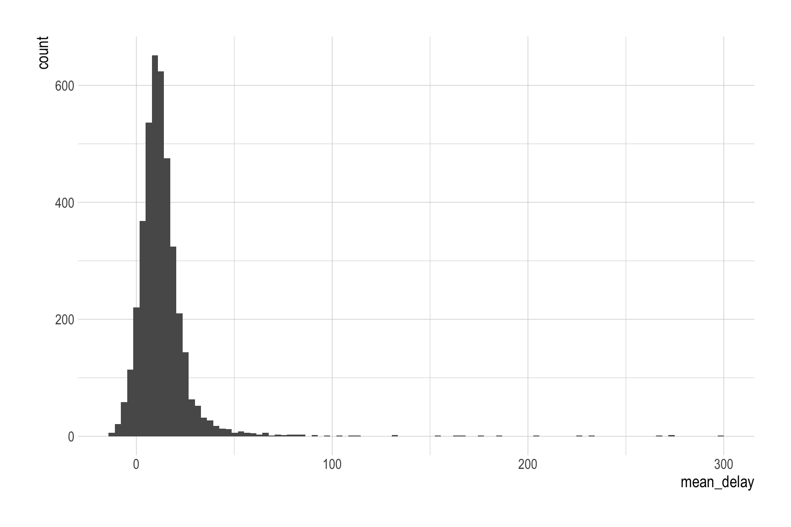
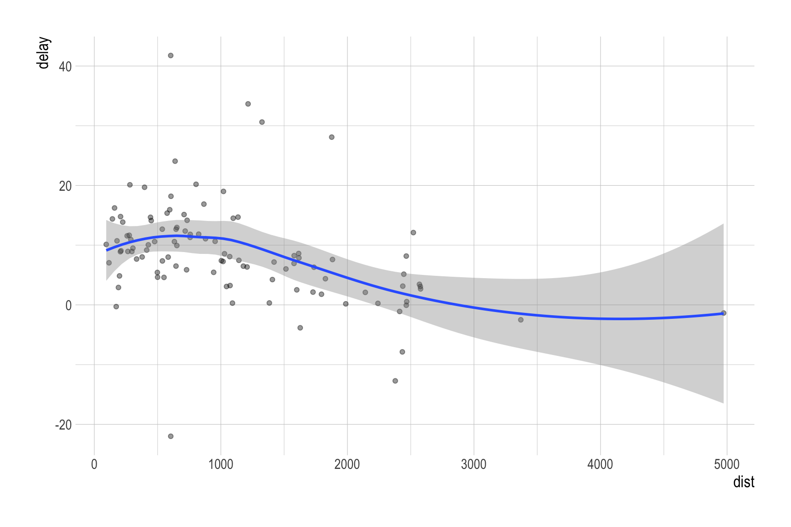
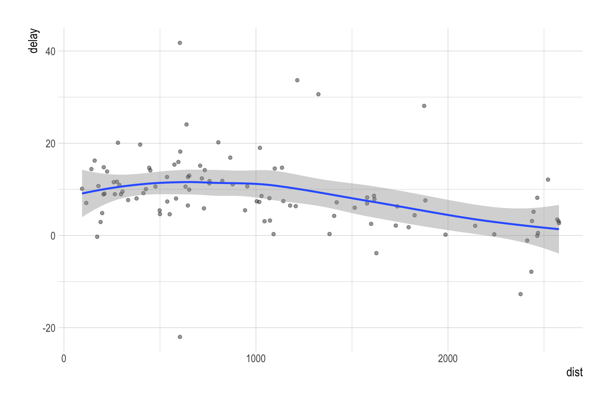
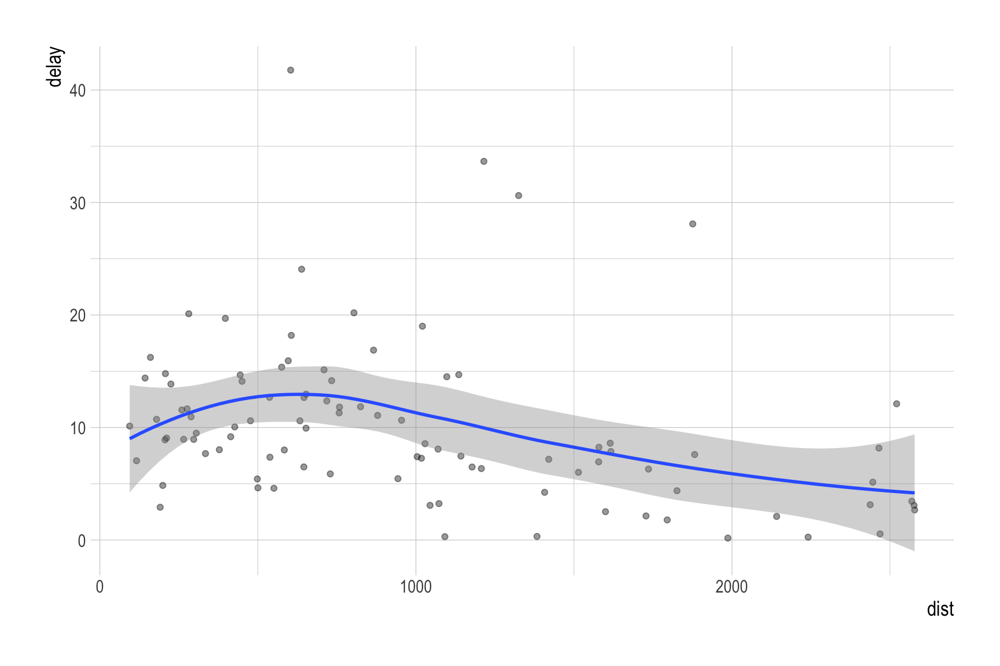
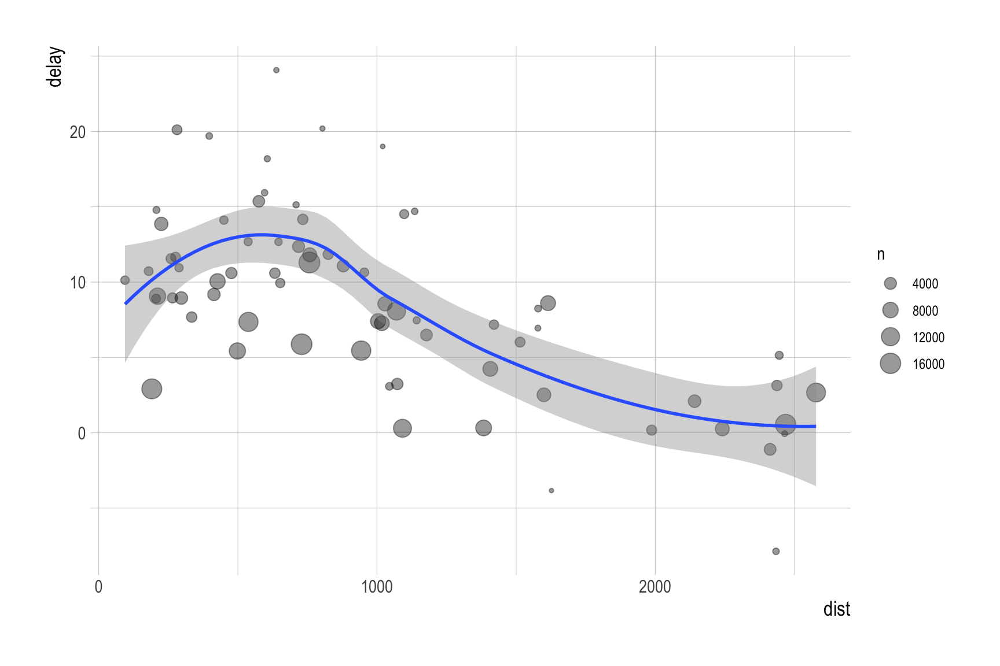

not_cancelled <- flights |>
filter(!(is.na(dep_delay) | is.na(arr_delay)))Note 24
group operations
group operations
Q. Describe the distribution of a plane’s average arrival delay.
- Airplanes are identified by their tail number (tailnum)
by_tailnum <- not_cancelled |>
group_by(tailnum) |>
summarise(mean_delay = mean(dep_delay, na.rm = T),
n = n())ggplot(by_tailnum, aes(x = mean_delay)) +
geom_histogram(bins = 100)
Q. How long is the longest average arrival delay?
by_tailnum <- by_tailnum |>
arrange(-mean_delay)Q. Describe the relationship between (1) the average distance from airports in New York City to a destination airport and (2) the average arrival dealy experienced on flights to that specific airport.
by_dest <- not_cancelled |>
group_by(dest) |>
summarise(n = n(),
dist = mean(distance, na.rm = T),
delay = mean(arr_delay, na.rm = T))ggplot(by_dest, aes(x = dist, y = delay)) +
geom_point(alpha = .4) +
geom_smooth()
by_dest2 <- by_dest |>
filter(dist <= 3000)
ggplot(by_dest2, aes(x = dist, y = delay)) +
geom_point(alpha = .4) +
geom_smooth()
by_dest3 <- by_dest |>
filter(dist <= 3000, delay > 0)
ggplot(by_dest3, aes(x = dist, y = delay)) +
geom_point(alpha = .4) +
geom_smooth()
by_dest3 <- by_dest |>
filter(dist <= 3000, n > 500)
ggplot(by_dest3, aes(x = dist, y = delay)) +
geom_point(alpha = .4, aes(size = n)) +
geom_smooth()
Q. Calculate the average arrival delay for each date. Q. Given that the arrival delay is positive, calculate the average arrival delay for each date.
by_day <- not_cancelled |>
group_by(year, month, day) |>
summarize(avg_delay = mean(arr_delay, na.rm = T),
avg_delay_pos = mean(arr_delay[arr_delay > 0], na.rm = T),
)by_dest_sd <- not_cancelled |>
group_by(dest) |>
summarize(dist_sd = sd(distance)) |>
arrange(-dist_sd)Q. When do the first and last flights leave each day?
first_last <- not_cancelled |>
group_by(year, month, day) |>
summarize(first = min(dep_time, na.rm = T),
last = max(dep_time, na.rm = T)
)Classwork 12
beer_markets <- read_csv('https://bcdanl.github.io/data/beer_markets_all.csv')